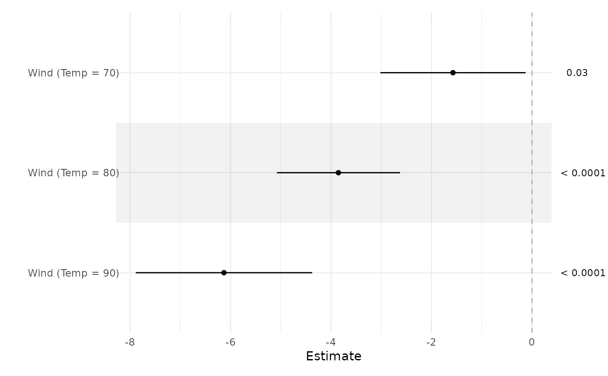
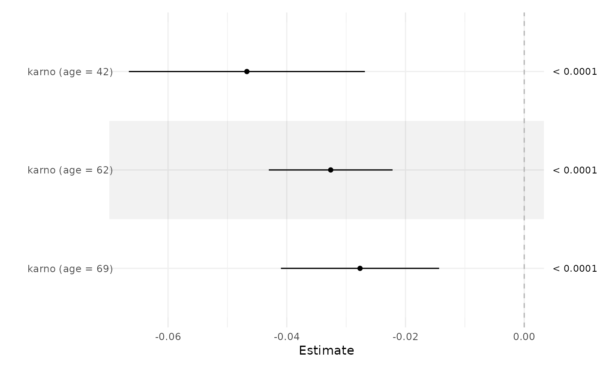

Construct confidence intervals in the presence of interactions
ci_int.RdConstruct confidence intervals in the presence of interactions
Arguments
- fit
A model fit, as produced by
lm(),glm(),survival::coxph(), etc.- term
Term of interest
- ...
Term to condition on; ideally a vector. See examples.
Value
A data.frame suitable for use in ci_plot()
Examples
fit <- lm(Ozone ~ Solar.R + Wind * Temp, airquality)
ci_int(fit, Wind, Temp=c(70, 80, 90))
#> Estimate Lower Upper p
#> Wind (Temp = 70) -1.571918 -3.018532 -0.125304 3.347939e-02
#> Wind (Temp = 80) -3.851437 -5.075969 -2.626904 9.345801e-09
#> Wind (Temp = 90) -6.130955 -7.886115 -4.375795 3.478774e-10
ci_int(fit, Wind, Temp=c(70, 80, 90)) |> ci_plot()

airquality$Heat <- cut(airquality$Temp, 3, labels=c("Cool","Mild","Hot"))
fit <- lm(Ozone ~ Solar.R + Wind * Temp, airquality)
ci_int(fit, Wind, Temp) |> ci_plot()
#> Error in data.frame(Estimate = rep(NA, length(cnd$val)), Lower = rep(NA, length(cnd$val)), Upper = rep(NA, length(cnd$val)), p = rep(NA, length(cnd$val)), row.names = paste0(x, " (", cnd$str, " = ", cnd$val, ")")): duplicate row.names: Wind ( = 74), Wind ( = 69), Wind ( = 66), Wind ( = 68), Wind ( = 62), Wind ( = 59), Wind ( = 61), Wind ( = 57), Wind ( = 58), Wind ( = 67), Wind ( = 79), Wind ( = 87), Wind ( = 82), Wind ( = 72), Wind ( = 65), Wind ( = 73), Wind ( = 76), Wind ( = 77), Wind ( = 78), Wind ( = 80), Wind ( = 84), Wind ( = 85), Wind ( = 81), Wind ( = 83), Wind ( = 92), Wind ( = 86), Wind ( = 88), Wind ( = 89), Wind ( = 90), Wind ( = 75), Wind ( = 94), Wind ( = 91), Wind ( = 93), Wind ( = 71), Wind ( = 64)
# Survival
library(survival)
fit <- coxph(Surv(time, status) ~ karno * age, veteran)
ci_int(fit, karno, age) |> ci_plot()

# A transformation
fit <- lm(Ozone ~ Solar.R + log(Wind) * Temp, airquality)
ci_int(fit, log(Wind), Temp=c(70, 80, 90))
#> Estimate Lower Upper p
#> log(Wind) (Temp = 70) -23.85880 -40.46380 -7.253801 5.274605e-03
#> log(Wind) (Temp = 80) -34.82404 -46.03187 -23.616204 1.329099e-08
#> log(Wind) (Temp = 90) -45.78927 -58.88184 -32.696704 3.339259e-10
ci_int(fit, log(Wind), Temp=c(70, 80, 90)) |> ci_plot()
airquality$Heat <- cut(airquality$Temp, 3, labels=c("Cool","Mild","Hot"))
fit <- lm(Ozone ~ Solar.R + Wind * Heat, airquality)
ci_int(fit, Wind, Heat) |> ci_plot()